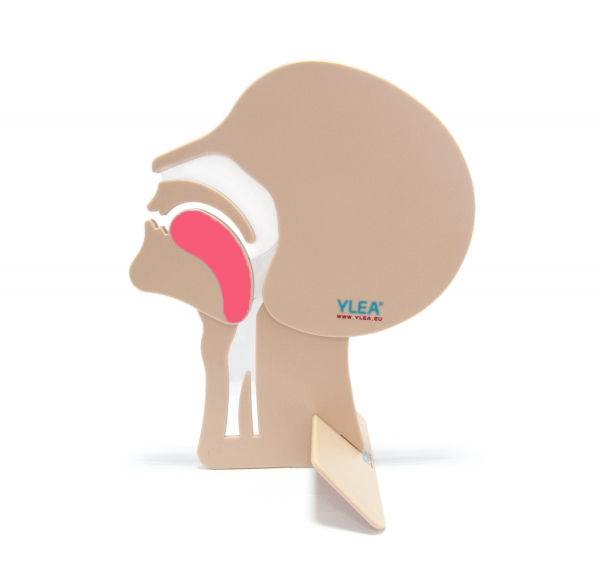
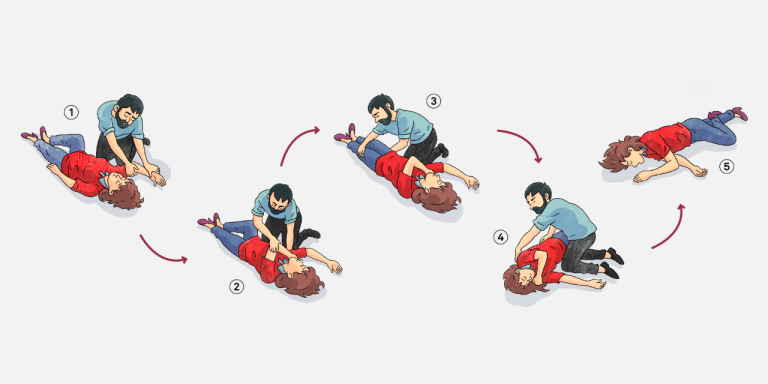

Une personne a perdu connaissance lorsqu'elle ne répond et ne réagit à aucune sollicitation verbale ou physique, mais respire.
Une victime inconsciente laissée sur le dos est exposée à l'obstruction des voies aériennes par :
Si tu es seul, crier « Au secours ! » avant tout geste. Un témoin peut appeler les secours pendant que tu agis sur la victime.
Limiter les mouvements de la colonne · Position stable et la plus latérale possible · Permettre de surveiller la respiration · Permettre l'écoulement des liquides (bouche ouverte)
→ Adopter immédiatement la CAT arrêt cardiaque (Ch.10) et prévenir les secours de l'évolution.
Qui ? · Où exactement ? · Quoi ? (personne inconsciente qui respire) · Circonstances (chute, traumatisme ?) · Traitements connus · Antécédents


Points clés : la stimulation a-t-elle été réalisée avant tout geste ? La LVA a-t-elle précédé l'appréciation de la respiration ? La PLS a-t-elle été correctement exécutée (3 temps) ? La surveillance a-t-elle été maintenue ? L'alerte a-t-elle été donnée avec les bons éléments ?